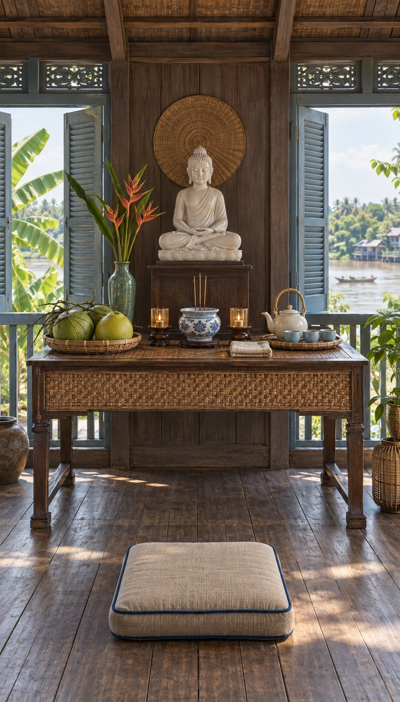
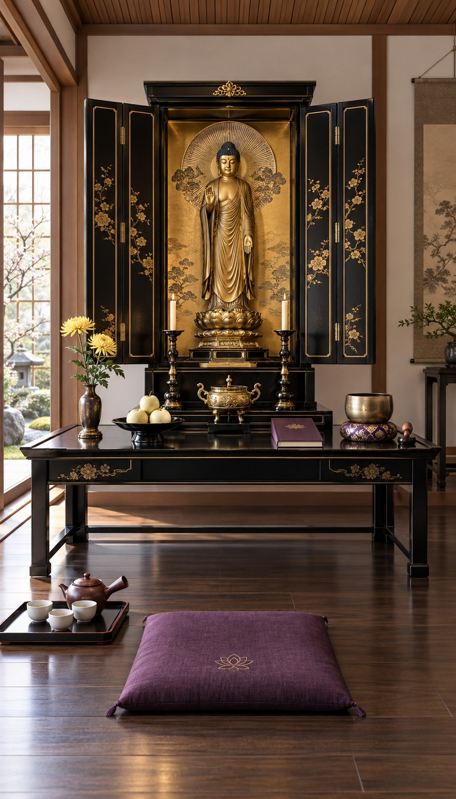
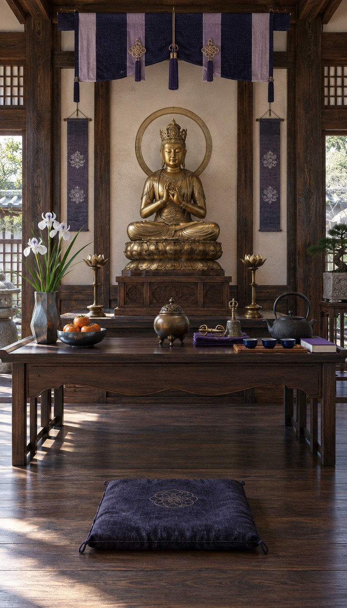
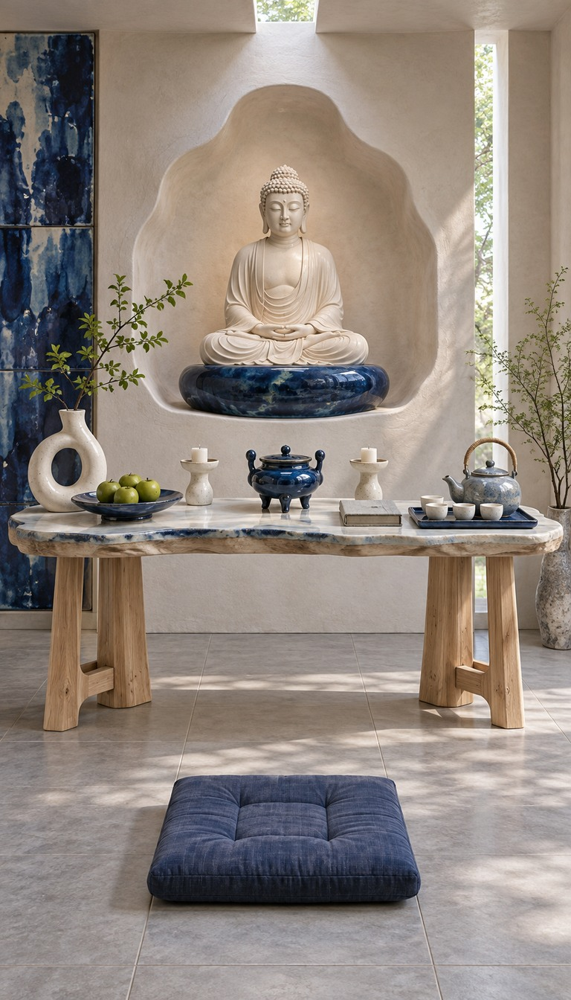
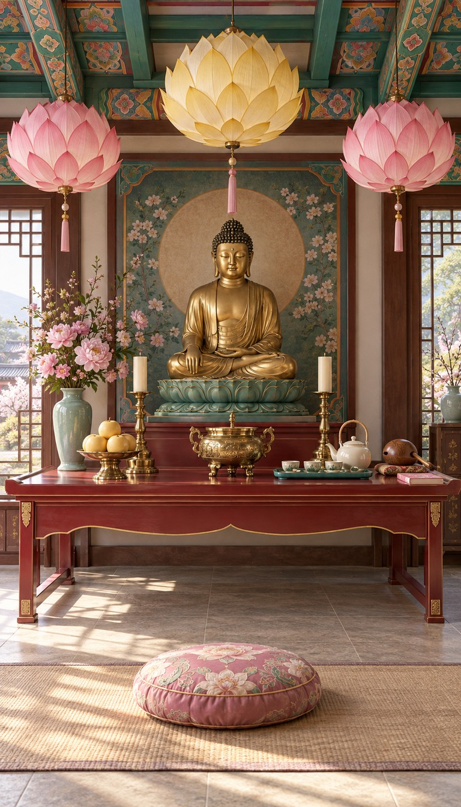

<!doctype html><html lang="zh"><meta charset="utf-8"><style>*{box-sizing:border-box}body{margin:0;background:#f4f1ea;color:#283129;font:15px -apple-system,BlinkMacSystemFont,'PingFang SC',sans-serif}header{padding:28px 32px 12px}h1{font-size:30px;margin:0 0 10px}p{line-height:1.6;color:#626758}nav{padding:8px 32px 20px;display:flex;gap:8px;flex-wrap:wrap}button{border:1px solid #bbc0b2;border-radius:20px;padding:8px 14px;background:white;color:#334235;cursor:pointer}button.active{background:#2f5145;color:white}main{padding:0 24px 30px;display:grid;grid-template-columns:repeat(5,minmax(0,1fr));gap:16px}article{background:#fff;border-radius:12px;overflow:hidden;box-shadow:0 2px 12px #0000000b}article img{display:block;width:100%;aspect-ratio:4/7;object-fit:cover}article .copy{padding:12px}h2{font-size:17px;margin:0 0 7px}.meta{font-size:12px;line-height:1.6;color:#73796a}.pending{aspect-ratio:4/7;display:grid;place-items:center;background:#e4e5db;color:#67715c}a{color:inherit;text-decoration:none}dialog{padding:0;border:0;background:#161c18;max-width:96vw;max-height:96vh}dialog img{display:block;max-width:94vw;max-height:93vh;object-fit:contain}dialog::backdrop{background:#000c}dialog button{position:fixed;right:20px;top:18px}@media(max-width:1100px){main{grid-template-columns:repeat(3,1fr)}}@media(max-width:620px){main{grid-template-columns:repeat(2,1fr);gap:10px;padding:0 10px 25px}header{padding:20px 16px}nav{padding:8px 16px}h1{font-size:24px}h2{font-size:14px}}main{grid-template-columns:repeat(5,minmax(0,1fr));padding:0 20px;gap:14px}h1{font-size:24px}header{padding:18px 24px 12px}article .copy{padding:10px}article img{height:800px;object-fit:contain;background:#eee}</style><header><h1>第二批原创佛堂主题 · T27–T31</h1></header><main><article data-region="越南"><a href="T27.png" class="zoom"></a><div class="copy"><h2>T27 · 湄公河藤影凉廊佛堂</h2><div class="meta">越南 · 水葫芦编织／青蓝百叶／河风</div></div></article><article data-region="日本"><a href="T28.png" class="zoom"></a><div class="copy"><h2>T28 · 净土折扉金屏佛堂</h2><div class="meta">日本 · 佛坛折扉／黑漆描金／扇形光背</div></div></article><article data-region="日本"><a href="T29.png" class="zoom"></a><div class="copy"><h2>T29 · 密教绳结紫檀道场</h2><div class="meta">日本 · 紫藤织物／密教法具／柱列节奏</div></div></article><article data-region="日本"><a href="T30.png" class="zoom"></a><div class="copy"><h2>T30 · 濑户青蓝陶艺佛堂</h2><div class="meta">日本 · 钴蓝流釉／灰白陶墙／雕塑式陶器</div></div></article><article data-region="韩国"><a href="T31.png" class="zoom"></a><div class="copy"><h2>T31 · 燃灯纸莲丹青佛堂</h2><div class="meta">韩国 · 纸莲灯／丹青梁彩／粉绿春光</div></div></article></main></html>